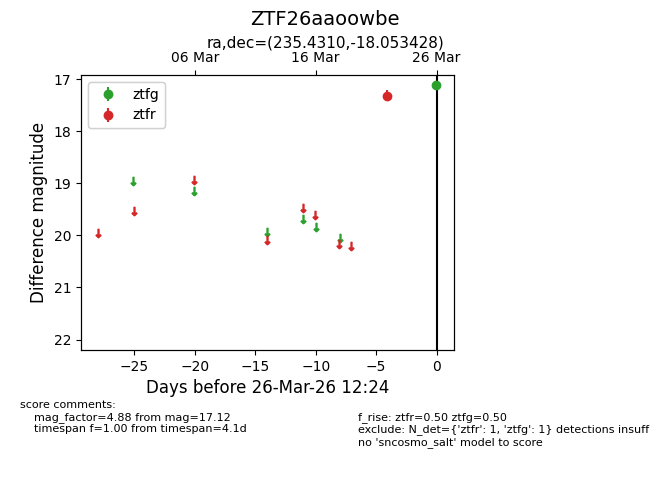
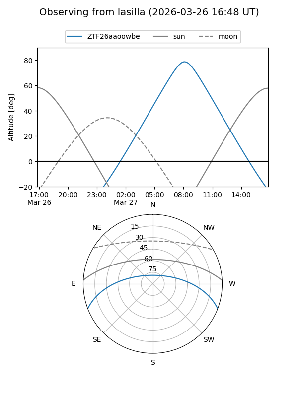
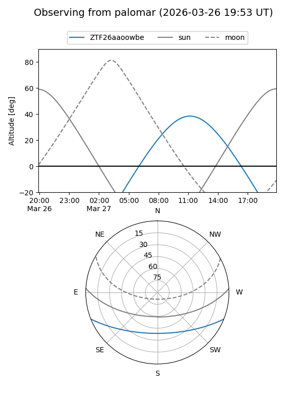

ZTF26aaoowbe
Target ZTF26aaoowbe at 2026-03-26 12:26
Aliases and brokers:
FINK: link
Lasair: link
ALeRCE: link
alt names
ZTF26aaoowbe (ztf,fink_ztf)
Coordinates:
equatorial (ra, dec) = 235.4310,-18.05343
equatorial (HMS+DMS) = 15:41:43.44,-18:03:12.34
galactic (l, b) = (350.1575,+28.80552)
Flags:
Photometry:
last ztfg=17.12, ztfr=17.32
1 ztfg, 1 ztfr detections
Lightcurve

Visibility


Additional plots